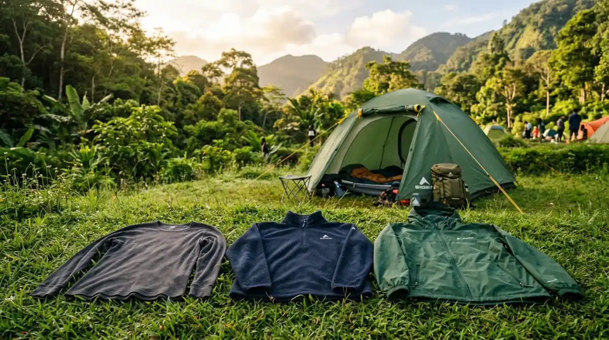

Memilih baju yang cocok untuk camping Batu adalah kunci kenyamanan menikmati alam.
Memilih baju yang cocok untuk camping Batu adalah kunci kenyamanan menikmati alam.
- Memahami "Microclimate" Kota Batu yang Menggigit
- Rahasia Nyaman dengan Layering System (Sistem Berlapis)
- Detail Kecil yang Sering Terlupakan: Aksesori Tambahan
- Menyesuaikan Pakaian dengan Aktivitas di Lokasi
- Mengapa Persiapan Ini Begitu Krusial?
- Rekomendasi Solusi: Nikmati Alam Tanpa Ribet
- Penutup: Jangan Biarkan Dingin Merusak Kenanganmu
- FAQ
Pernahkah kamu membayangkan bangun pagi di tengah perbukitan hijau, tapi alih-alih menikmati kopi panas dengan tenang, kamu justru menggigil hebat karena baju yang kamu pakai basah oleh embun? Rasanya pasti menyebalkan, ya. Momen yang seharusnya jadi pelarian manis dari penatnya deadline kantor justru berubah jadi perjuangan melawan dingin yang menusuk tulang.
Menyesal kemudian memang tidak ada gunanya, apalagi kalau kamu sudah berada di atas gunung tanpa persiapan baju yang tepat. Cuaca di Batu itu unik dan tidak bisa diremehkan; suhunya bisa turun drastis tanpa permisi. Jangan biarkan rencana liburan seru yang sudah kamu susun rapi berakhir dengan kamu yang hanya meringkuk di dalam tenda karena kedinginan.
Memilih baju yang cocok untuk camping Batu bukan sekadar soal gaya, tapi soal memastikan kamu tidak melewatkan momen matahari terbit yang magis hanya karena salah kostum.
Memahami "Microclimate" Kota Batu yang Menggigit
Sebelum kita bongkar isi lemari, kamu harus tahu dulu lawan yang akan kita hadapi. Kota Batu punya karakter udara yang berbeda dengan Malang kota, apalagi Surabaya. Di sini, matahari mungkin terasa terik di siang hari, tapi begitu memasuki pukul lima sore, udara dingin mulai merayap pelan.
Kalau diibaratkan dunia kerja, cuaca Batu itu seperti bos yang kelihatannya santai tapi tiba-tiba memberikan tugas revisi di hari Jumat sore—tak terduga dan menuntut kesiapan mental. Di area perkemahan yang lebih tinggi, suhu bisa mencapai 10°C hingga 15°C.
Tanpa persiapan yang matang, kamu akan merasa seperti masuk ke ruang meeting ber-AC sentral hanya dengan memakai kaos dalam. Itulah alasan mengapa persiapan "baju yang cocok untuk camping Batu" harus dimulai dari pemahaman terhadap teknik layering.
Rahasia Nyaman dengan Layering System (Sistem Berlapis)
Banyak orang berpikir kalau ingin hangat, cukup pakai jaket setebal mungkin. Padahal, itu salah kaprah. Bayangkan kamu memakai satu jas tebal seharian di kantor tanpa kemeja di dalamnya; kamu akan kegerahan saat bergerak tapi kedinginan saat diam. Teknik terbaik adalah sistem berlapis yang fleksibel.
1. Base Layer: Si Penyerap Keringat yang Setia
Lapisan pertama ini menempel langsung di kulitmu. Fungsinya mirip dengan asisten pribadi yang handal: dia harus bisa "membereskan" keringat dengan cepat sebelum keringat itu mendingin dan membuatmu meriang.
Gunakan bahan sintetis atau thermal yang punya fitur quick-dry. Hindari bahan katun 100% untuk lapisan ini. Kenapa? Karena katun itu seperti rekan kerja yang lambat merespons; dia menyerap masalah (keringat) tapi tidak menyelesaikannya (menguapkannya), sehingga bajumu akan basah dan dingin dalam waktu lama.
2. Mid Layer: Lapisan Insulasi Penahan Panas
Setelah keringat teratasi, kamu butuh lapisan yang menjaga panas tubuh agar tidak keluar. Ini adalah fase di mana kamu membangun "benteng" kenyamanan. Bahan fleece atau jaket bulu angsa tipis (down jacket) adalah pilihan terbaik sebagai baju yang cocok untuk camping Batu.
Lapisan ini bekerja seperti budaya kerja yang positif: dia memerangkap kehangatan di sekitarmu agar kamu tetap produktif (atau dalam hal ini, tetap bisa asyik mengobrol di depan api unggun). Jika udara tidak terlalu ekstrim, sweater rajut yang rapat juga bisa menjadi pilihan yang estetik namun fungsional.
3. Outer Layer: Pelindung dari Angin dan Embun
Ini adalah pertahanan terakhirmu. Di Batu, angin seringkali bertiup kencang membawa uap air atau embun. Kamu butuh jaket yang windproof dan kalau bisa water-resistant. Jaket parka atau windbreaker sangat disarankan.
Tanpa lapisan luar ini, panas tubuh yang sudah dikumpulkan oleh mid layer akan tersapu habis oleh angin. Ibaratnya, ini adalah sistem keamanan kantor; sebagus apa pun interior di dalam, kalau pintunya terbuka lebar, kenyamanan di dalam akan hilang seketika.

Ilustrasi sistem layering: base layer, mid layer, dan outer layer untuk kenyamanan maksimal saat camping.Detail Kecil yang Sering Terlupakan: Aksesori Tambahan
Jangan hanya fokus pada badan, tapi lupakan anggota tubuh lainnya. Ujung jari tangan dan kaki adalah bagian yang paling cepat merasakan dingin.
- Kaos Kaki Tebal: Gunakan bahan wol jika ada. Ini penting agar saat tidur kamu tidak merasa kaki seperti membeku.
- Beanie atau Kupluk: Tahukah kamu kalau banyak panas tubuh hilang melalui kepala? Menggunakan kupluk saat tidur sangat membantu menjaga stabilitas suhu tubuh.
- Sarung Tangan: Berguna saat kamu harus memegang peralatan masak atau gadget di pagi buta.
Menyesuaikan Pakaian dengan Aktivitas di Lokasi
Memilih baju yang cocok untuk camping Batu juga harus melihat apa yang akan kamu lakukan. Kalau rencana kamu adalah mendaki kecil untuk melihat sunrise, pastikan lapisan bajumu mudah dilepas satu per satu.
Saat berjalan mendaki, tubuhmu akan menghasilkan panas. Jika kamu memakai jaket terlalu tebal tanpa bisa dibuka, kamu akan berkeringat berlebih, yang justru berbahaya saat kamu berhenti bergerak nanti.
Prinsipnya sama dengan mengelola proyek; kamu harus bisa menyesuaikan sumber daya (pakaian) dengan beban kerja (aktivitas). Jangan sampai kamu "over-dressed" saat beraktivitas tapi "under-dressed" saat sedang santai duduk di depan tenda.
Mengapa Persiapan Ini Begitu Krusial?
Saya pernah menemui teman yang nekat camping di Batu hanya bermodal kaos oblong dan jaket fashion tipis. Hasilnya? Dia tidak bisa tidur semalaman, menggigil, dan keesokan harinya malah jatuh sakit. Alih-alih mendapatkan foto aesthetic untuk media sosial, yang ada hanyalah wajah pucat dan rasa lemas.
Sebagai orang yang sering berkecimpung di dunia luar ruang, saya sangat menyarankan kamu untuk berinvestasi sedikit lebih banyak pada pakaian yang berkualitas. Tidak perlu bermerek mahal, yang penting bahannya tepat. Pengalaman camping adalah tentang menikmati alam, bukan tentang bertahan hidup karena kedinginan.
Rekomendasi Solusi: Nikmati Alam Tanpa Ribet
Kalau kamu merasa menyiapkan semua peralatan tidur yang tebal itu terlalu merepotkan—apalagi kalau bagasi mobil sudah penuh—sebenarnya ada cara yang lebih cerdas. Kamu bisa memilih tempat camping yang sudah menyediakan fasilitas lengkap.
Misalnya di Batu Sunrise Camp, kamu tidak perlu pusing membawa tenda atau mencari sleeping bag yang mampu menahan suhu dingin Batu. Mereka sudah menyiapkan tenda yang kokoh dan perlengkapan tidur yang memadai.
Dengan begitu, kamu hanya perlu fokus pada "baju yang cocok untuk camping Batu" yang bersifat pribadi seperti baju berlapis tadi. Ini adalah cara terbaik bagi kamu yang ingin healing tanpa harus merasa seperti sedang ikut latihan militer.
Penutup: Jangan Biarkan Dingin Merusak Kenanganmu
Pada akhirnya, camping adalah tentang menciptakan cerita indah, baik itu bersama teman, pasangan, atau keluarga. Membayangkan diri kita duduk santai melihat kerlap-kerlip lampu Kota Batu dari ketinggian sambil menyeruput teh hangat adalah sebuah kemewahan yang layak diperjuangkan. Namun, semua itu hanya bisa dinikmati jika tubuhmu merasa nyaman dan hangat.
Jangan sampai di kemudian hari kamu menoleh ke belakang dan hanya mengingat betapa tersiksanya kamu karena kedinginan, bukan betapa indahnya pemandangan yang ada di depan mata. Persiapkan bajumu dari sekarang, riset cuacanya, dan pastikan kamu membawa pakaian berlapis yang tepat.
Percayalah, kenyamananmu adalah investasi terbaik untuk liburan yang tak terlupakan. Jadi, sudah siap bongkar lemari untuk petualangan akhir pekan ini?
FAQ